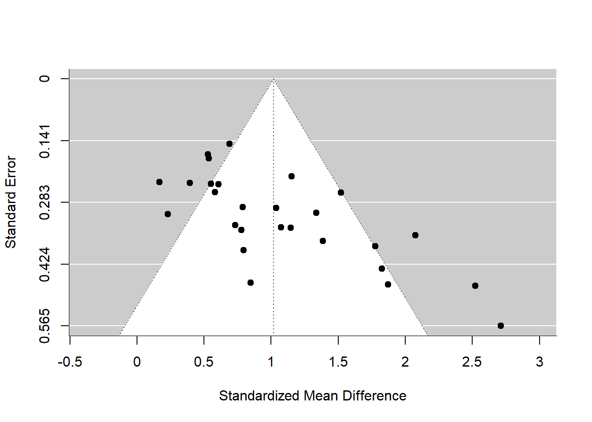

Random-Effects Model (k = 27; tau^2 estimator: REML)
logLik deviance AIC BIC AICc
-24.9568 49.9137 53.9137 56.4299 54.4354
tau^2 (estimated amount of total heterogeneity): 0.2511 (SE = 0.0967)
tau (square root of estimated tau^2 value): 0.5011
I^2 (total heterogeneity / total variability): 76.54%
H^2 (total variability / sampling variability): 4.26
Test for Heterogeneity:
Q(df = 26) = 92.7894, p-val < .0001
Model Results:
estimate se zval pval ci.lb ci.ub
1.0175 0.1143 8.8997 <.0001 0.7934 1.2416 ***
---
Signif. codes: 0 '***' 0.001 '**' 0.01 '*' 0.05 '.' 0.1 ' ' 1
# Funnel plotfunnel(res)

The funnel plot reveals a noticeable asymmetry, suggesting potential publication bias or small-study effects. In an ideal scenario with no publication bias, studies would be symmetrically distributed around the pooled effect size, forming an inverted funnel shape. However, in this plot, smaller studies (with higher standard errors) are underrepresented on the left side, especially those with low or negative effect sizes. Meanwhile, there is a concentration of smaller studies reporting large positive effects on the right. This pattern may indicate that studies showing little or no gender difference were less likely to be published or included in the analysis. Therefore, while the overall effect size is large and statistically significant, this plot suggests that the observed effect may be inflated due to reporting bias.
res_quality <-rma(yi, vi, mods =~ NOS.score, data = data_es)summary(res_quality)
There is no strong evidence that study quality, as measured by the NOS score, significantly moderates the effect of gender on toy preference. This suggests that the overall finding—a robust preference among boys for male-typed toys—holds across studies of varying quality.
Studies authored by more women tend to report weaker gender differences in toy preferences than those authored by more men. This suggests that author gender may influence research outcomes or interpretations, possibly reflecting different theoretical orientations, analytic choices, or publication tendencies. The moderator explains a substantial proportion of the between-study heterogeneity (∼41%), which makes it a strong candidate as an explanatory factor.